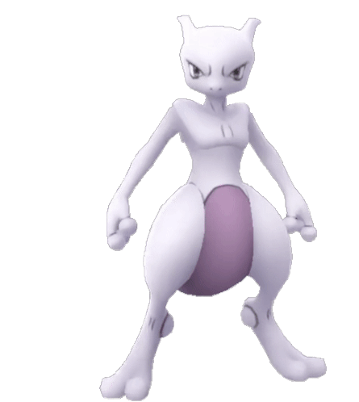

-
Bulbasaur #01

- Grama
- Veneno
Há uma semente de planta em suas costas desde o dia que este Pókemon nasce. A semente cresce lentamente.
-
Ivysaur #02

- Grama
- Veneno
Quando o bulbo em suas costas cresce, parece perder a capacidade de ficar de pé em suas patas traseiras.
-
Venusaur #03

- Grama
- Veneno
Sua planta floresce quando está absorvendo energia solar. Ele permanece em movimento para buscar a luz solar.
-
Charmander #04

- Fogo
Tem preferência por coisas quentes. Quando chove, diz-se que o vapor jorra da ponta de sua cauda.
-
Charmeleon #05

- Fogo
Tem uma natureza bárbara. Na batalha, ele chicoteia sua cauda ardente e corta com garras afiadas.
-
Charizard #06

- Fogo
- Voo
Ele cospe fogo que é quente o suficiente para derreter pedregulhos. Pode causar incêndios florestais soprando chamas.
-
Squirtle #07

- Água
Quando ele retrai seu longo pescoço em sua concha, ele esguicha água com força vigorosa.
-
Wartortle #08

- Água
É reconhecido como um símbolo de longevidade. Se sua concha tem algas, esse Wartortle é muito antigo.
-
Blastoise #09

- Água
Ele esmaga seu inimigo sob seu corpo pesado para causar desmaios. Em uma pitada, ele se retirará dentro de sua concha.
-
Caterpie #10

- Inseto
Para proteção, ele libera um fedor horrível da antena em sua cabeça para afastar os inimigos.
-
Metapod #011
- Inseto
Está esperando o momento de evoluir. Nesta fase, ele só pode endurecer, por isso permanece imóvel para evitar ataques.
-
Butterfree #012

- Inseto
- Voo
Ele adora o néctar das flores e pode localizar manchas de flores que contenham até mesmo pequenas quantidades de pólen..
-
Pikachu #013

- Elétrico
Quando está irritado, descarrega imediatamente a energia armazenada nas bolsas em suas bochechas.
-
Raichu #014

- Elétrico
Sua cauda descarrega eletricidade no solo, protegendo-o de choques.
-
Mew #015
- Psiquico
Quando visto através de um microscópio, o cabelo curto, fino e delicado deste Pokémon pode ser visto.
-
Mewtwo #016
- Psiquico
Seu DNA é quase igual ao de Mew. No entanto, seu tamanho e disposição são muito diferentes.
-
Meowth #017

- Normal
Tudo o que faz é dormir durante o dia. À noite, patrulha seu território com os olhos brilhantes.
-
Persian #018
- Normal
Embora seu pelo tenha muitos admiradores, é difícil criá-lo como animal de estimação por causa de sua maldade inconstante.
-
Slowpoke #019
- Água
- Psiquico
É incrivelmente lento e estúpido. Demora cinco segundos para sentir dor quando está sob ataque.
-
Gastly #020

- Fantasma
- Tóxico
Ele envolve seu oponente em seu corpo gasoso, enfraquecendo lentamente sua presa ao envenená-la através da pele.
-
Haunter #021

- Fantasma
- Tóxico
Ele gosta de se esconder no escuro e bater nos ombros com a mão gasosa. Seu toque causa estremecimentos sem fim.
-
Gengar #022

- Fantasma
- Tóxico
Para roubar a vida do seu alvo, ele se esconde na sombra da presa e espera silenciosamente por uma oportunidade.
-
Onix #023
- Pedra
- Chão
À medida que escava o solo, absorve muitos objetos duros. É isso que torna seu corpo tão sólido.
-
Phanpy #024
- Chão
Este Pokémon vive e nidifica nas margens de um rio. Depois de brincar na lama, ele não conseguirá se acalmar a menos que lave o corpo.
-
Electabuzz #025
- Eletrico
Seu corpo descarrega eletricidade constantemente. Chegar perto dele deixará seus cabelos em pé.
-
Espeon #026

- Psiquico
A ponta de sua cauda bifurcada treme quando prevê o próximo movimento do oponente.
-
Ninetales #027
- Fogo
Algumas lendas afirmam que cada uma de suas nove caudas tem seu próprio tipo de poder místico especial.
-
Togepi #028

- Fada
A concha parece estar cheia de alegria. Diz-se que ele compartilhará boa sorte quando tratado com gentileza.
-
Ninjask #029
- Erro
- Voo
Seu choro deixa uma dor de cabeça duradoura se for ouvido por muito tempo. Ele se move tão rapidamente que é quase invisível.
-
shedinja #030
- Erro
- Fantasma
Um Pokémon muito peculiar que de alguma forma aparece em uma Pokébola quando um Nincada evolui.
-
Aurorus #031
- Pedra
- Gelo
Aurorus foi restaurado a partir de um fóssil. Diz-se que quando este Pokémon uiva, aparecem auroras no céu noturno.
-
heracross #032
- Erro
- Brigando
Adora néctar doce. Para manter todo o néctar para si, ele afasta os rivais com seu valioso chifre.
-
Clefable #033
- Fada
Dizem que vivem em montanhas remotas e tranquilas, esse tipo de fada tem uma forte aversão a ser vista.
-
Psyduck #034
- Água
É constantemente assolado por uma dor de cabeça. Quando a dor de cabeça fica intensa, ela começa a usar poderes misteriosos.
-
Zangoose #035
- Normal
É o arquirrival de Seviper. Para ameaçar aqueles que encontra, ele abre as garras das patas dianteiras.
 ©Bruno15Tech
©Bruno15Tech